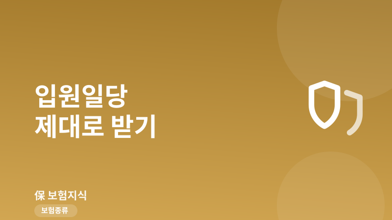
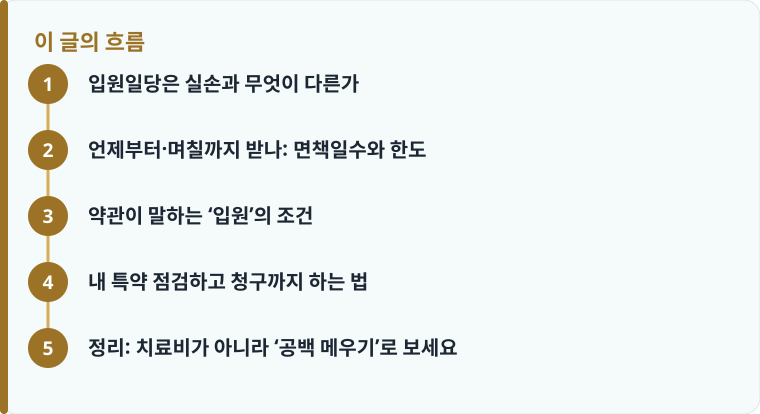

입원일당은 입원 1일당 1만·2만·3만·5만 원처럼 정해진 금액을 주는 정액담보로, 실손과 별개로 중복 수령이 가능합니다.
‘입원 1일차부터’가 아니라 ‘3일 초과(4일째)부터’ 주는 상품이 많고, 1회 입원당 120일 또는 180일 한도가 붙습니다.
약관상 입원(6시간 이상 체류 등) 요건을 채워야 하며, 요양병원·정신질환 입원은 감액·면책될 수 있습니다.
입원일당은 실손과 무엇이 다른가
입원일당(입원비) 특약은 실손보험과 성격이 완전히 다릅니다. 실손은 실제로 낸 치료비를 영수증 기준으로 돌려주는 ‘실손보상’ 담보라, 여러 개 가입해도 낸 돈을 넘겨 받을 수 없고 비례보상으로 나눠 지급됩니다. 반면 입원일당은 치료비가 얼마였는지 따지지 않고 입원 하루당 정해진 금액을 주는 ‘정액담보’입니다. 하루 1만 원짜리를 넣었다면 5일 입원 시 5만 원, 하루 3만 원짜리라면 15만 원이 치료비와 무관하게 지급됩니다.
정액담보라는 점 때문에 결정적인 차이가 생깁니다. 실손은 두 개를 들어도 한 번 낸 치료비를 나눠서만 받지만, 입원일당은 서로 다른 보험에 각각 하루 2만 원·3만 원짜리를 넣어 두었다면 같은 입원 하루에 대해 5만 원을 ‘중복’으로 받을 수 있습니다. 실손의 비례보상이 왜 그렇게 작동하는지 헷갈린다면 실손 중복가입과 비례보상 편을 함께 보면 정액담보와의 차이가 또렷해집니다. 그래서 실손이 이미 있다면 입원일당은 ‘치료비를 또 받는 담보’가 아니라, 입원해 있는 동안 벌지 못한 소득과 간병·부대비용을 메우는 별도 주머니로 이해하는 편이 정확합니다.
도수치료처럼 실손 한도가 빡빡한 항목을 자주 이용한다면 실손 쪽 한도부터 점검하는 것이 우선이고, 그 구조는 도수치료 실손 한도 편에서 따로 다룹니다. 입원일당은 그 위에 얹는 ‘생활 방어선’이라고 보면 됩니다.
언제부터·며칠까지 받나: 면책일수와 한도
입원일당에서 가장 많이 오해하는 부분이 ‘입원 첫날부터 준다’는 생각입니다. 상품에 따라 다릅니다. 흔한 설계 중 하나는 ‘3일 초과 입원’, 즉 4일째부터 지급하는 구조입니다. 이 경우 3일 이하로 입원하면 한 푼도 안 나오고, 10일 입원하면 처음 3일을 뺀 7일치만 받습니다. 또 어떤 상품은 반대로, 일정 일수 이상 입원하면 첫날로 소급해 전부 지급하는 방식도 있습니다. 예를 들어 ‘4일 이상 입원 시 1일차부터 지급’이라면 4일 입원에 4일치가 다 나옵니다. 내 특약이 ‘초과형’인지 ‘소급형’인지에 따라 짧은 입원의 실수령액이 크게 달라지므로, 약관의 면책일수 문구를 반드시 확인해야 합니다.
지급 일수에도 한도가 있습니다. 같은 질병·상해로 인한 한 번의 입원에 대해 통상 1회 입원당 최대 120일 또는 180일까지만 지급합니다. 그 이상 입원하더라도 초과분은 지급되지 않습니다. 여기에 ‘계속입원’ 규정이 붙는 점도 중요합니다. 퇴원했다가 같은 원인으로 직전 퇴원일 다음 날부터 180일 이내에 다시 입원하면, 새 입원이 아니라 앞의 입원에 이어지는 ‘계속입원’으로 합산합니다. 즉 두 번에 나눠 입원해도 한도(120일 또는 180일)는 하나로 계산되고, 면책일수도 다시 적용되지 않는 대신 한도는 공유합니다. 만성질환으로 재입원이 잦은 경우 이 합산 규정 때문에 후반부 입원은 한도를 다 써 지급이 멈출 수 있으니 미리 계산해 두는 것이 좋습니다.

약관이 말하는 ‘입원’의 조건
‘입원’이라는 말도 약관에서는 일상어보다 좁게 정의됩니다. 자택 요양이나 통원 치료는 입원일당 대상이 아닙니다. 병원에 갔더라도 진료 후 귀가하면 통원일 뿐이고, 입원으로 인정받으려면 보통 의사의 입원 지시에 따라 병실에 6시간 이상 머무는 등 약관이 정한 입원 요건을 충족해야 합니다. 응급실에서 밤새 관찰만 받았거나 낮병동에서 몇 시간 시술만 받고 나온 경우, 입원으로 인정되는지는 상품마다 갈립니다. 이 부분은 청구가 거절되는 대표적 지점이라, 애매하면 진단서·입퇴원확인서에 실제 입원 시각과 병실 사용이 남도록 챙겨 두는 편이 안전합니다.
입원 장소와 사유에 따른 감액·면책도 있습니다. 상급종합병원 입원은 정액이 그대로 나오지만, 요양병원 입원은 지급하지 않거나 절반 수준으로 감액하는 상품이 적지 않습니다. 요양·간병 목적의 장기 입원은 위험률이 다르기 때문입니다. 정신질환으로 인한 입원 역시 담보에 따라 면책이거나 일수 한도가 별도로 걸리는 경우가 있습니다. 그래서 ‘하루 얼마’라는 숫자만 볼 것이 아니라, 어떤 병원의 어떤 입원까지 인정하는지를 함께 봐야 실제 보장 범위가 보입니다. 최근 실손을 4세대로 바꾸며 입원일당 같은 정액특약을 함께 정리하는 분이 많은데, 전환 손익은 4세대 실손 전환 편에서 따로 따져 보길 권합니다.
작성·검수 기준
이 글은 특정 보험사의 상품을 권유하기 위한 것이 아니라, 입원일당(입원비) 특약을 볼 때 알아 두면 좋은 일반적인 기준을 정리한 것입니다. 면책일수(예: 3일 초과·4일째부터), 1회 입원당 120일 또는 180일 한도, 180일 계속입원 합산, 6시간 이상 입원 요건 같은 조건은 가입 시점과 개별 상품·약관에 따라 다르게 적용될 수 있습니다.
실제 지급 여부와 금액은 본인 증권의 약관과 상품설명서를 기준으로 판단해야 하며, 청구 단계에서 필요한 서류는 보험금 청구 서류 편에서 미리 확인해 두는 것이 정확합니다.
내 특약 점검하고 청구까지 하는 법
이미 가입한 특약이 있다면 새로 가입하기 전에 지금 계약부터 점검하는 것이 먼저입니다. 증권과 약관만 있으면 대부분 5분 안에 핵심을 확인할 수 있습니다. 아래 순서대로 짚어 보세요.
- 증권에서 ‘입원일당’ 또는 ‘질병·상해입원비’ 담보를 찾아 1일당 지급액(1만·2만·3만·5만 원 등)을 확인합니다.
- 약관에서 면책일수를 확인합니다. ‘3일 초과 입원’인지, ‘4일 이상 시 1일차부터 소급’인지에 따라 짧은 입원의 실수령이 달라집니다.
- 1회 입원당 지급 한도(120일 또는 180일)와 180일 계속입원 합산 규정을 확인해 재입원 시 손해가 없는지 봅니다.
- 요양병원·정신질환 입원의 감액·면책 여부와, 낮병동·응급실 관찰이 입원으로 인정되는지를 확인합니다.
- 입원 시 입퇴원확인서·진단서에 입원 시각과 병실 사용을 남기고, 실손과 입원일당을 각각 청구합니다.
정리: 치료비가 아니라 ‘공백 메우기’로 보세요
실손이 치료비를 책임진다면, 입원일당은 입원해 있는 동안 벌지 못한 소득과 간병·부대비용을 메우는 담보입니다. 그래서 적정 금액은 ‘치료비’가 아니라 ‘하루 입원하면 내가 얼마를 손해 보는가’를 기준으로 잡는 편이 현실적입니다. 대체로 하루 3만~5만 원 수준이면 간병·교통·소득 공백을 어느 정도 방어할 수 있고, 자영업자처럼 입원이 곧 매출 중단으로 이어지는 경우에는 조금 더 높게 잡는 것이 안전합니다. 다만 정액을 무작정 높이면 보험료가 함께 오르므로, 실손·진단비와 겹치지 않는 선에서 우선순위를 정해 조정하는 것이 좋습니다.
다른 보험 정보 글이 궁금하다면 보험지식 블로그에서 이어 읽어 보세요. 가입 전에는 반드시 약관과 상품설명서를 확인하는 것이 가장 안전한 방법입니다.